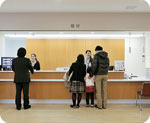

診療紹介
診察
社会全体が大きな変革期を迎え、高齢化も世界に類を見ない速さで進みつつあります。
いま何ができるのか。これから何をなすべきなのか。それは、私たち一人ひとりが自分自身のこととして考えなくてはならない問題です。
私たち寺沢病院は、これからも「優しさ」を基本とした医療活動を通じて、地域の中で健やかな笑顔を育むお手伝いをしていきたいと願っています。
検査体制
臨床検査・放射線検査部門は、的確な診断のために充実した検査体制を整えています。検査の分かりやすい説明を心掛け、“迅速かつ正確な”データを提供いたします。
- 検体検査／血液・生化学的検査
- 尿一般検査等
- 生体検査／心電図・ホルター型心電図検査
- 超音波検査・脳波検査
- エックス線検査／一般デジタル撮影
- マルチスライスＣＴ・・・早期発見、早期治療に役立つ
- 16列マルチスライスＣＴを導入。
- 低被ばくで高画質画像を実現し、提供します。
- 最新鋭のＰＡＣＳ装置を導入し、フィルムレス化を実現。モニター診断により、より正確な診断や分かりやすい説明が可能になりました。
- 内視鏡検査／胃・十二指腸
- 大腸ファイバースコピー
- 胃がん検診、大腸がん検診
- 特定健診、各種健康診断
- 各種予防接種
リハビリテーション

脳卒中や脳性麻痺などの中枢神経障害に対するリハビリテーションとして「ボバース・アプローチ」を導入しています。
患者様を真ん中に、理学療法・作業療法および言語聴覚療法を駆使し、日常生活に結びついた機能の獲得を目指しています。
ボバース・アプローチ…脳（中枢神経）の可塑性を活用して、麻痺した側をも含めた潜在能力を引き出し、個別治療訓練で機能の改善を生活機能の向上へと結びつけていく治療です。